"Run, run, fast as you can! You can't catch me, I'm the Gingerbread Man!"
⏱️ 10 min read•🎨 12 Story Illustrations•🎙️ Voice Narration•🗣️ Say-Along Chants
🎙️
Listen to Full Story Narration
Classic read-aloud voice narration with warm expression
0:0010:00
Scene 1 • Making the Gingerbread Dough
One day, the cook went into the kitchen to make some gingerbread. She took some flour and water, and treacle and ginger, and mixed them all well together, and she put in some more water to make it thin, and then some more flour to make it thick, and a little salt and some spice, and then she rolled it out into a beautiful, smooth, dark-yellow dough.
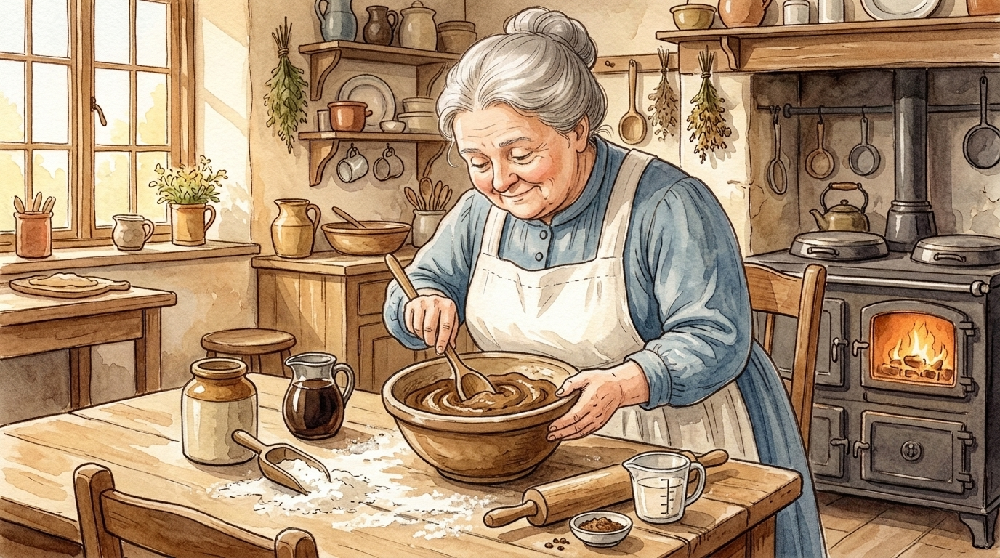
🔍 Zoom
The cook mixed flour, water, treacle, and ginger into a smooth, dark-yellow dough.
Scene 2 • Moulding the Gingerbread Man
Then she took the square tins and cut out some square cakes for the little boys, and with some round tins she cut out some round cakes for the little girls, and then she said, “I’m going to make a little gingerbread man for little Bobby.” So she took a nice round lump of dough for his body, and a smaller lump for his head, which she pulled out a little for the neck. Two other lumps were stuck on beneath for the legs, and were pulled out into proper shape, with feet and toes all complete, and two still smaller pieces were made into arms, with dear little hands and fingers.
But the nicest work was done on the head, for the top was frizzed up into a pretty sugary hat; on either side was made a dear little ear, and in front, after the nose had been carefully moulded, a beautiful mouth was made out of a big raisin, and two bright little eyes with burnt almonds and caraway seeds.
Then the gingerbread man was finished ready for baking, and a very jolly little man he was. In fact, he looked so sly that the cook was afraid he was plotting some mischief, and when the batter was ready for the oven, she put in the square cakes and she put in the round cakes; and then she put in the little gingerbread man in a far back corner, where he couldn’t get away in a hurry.
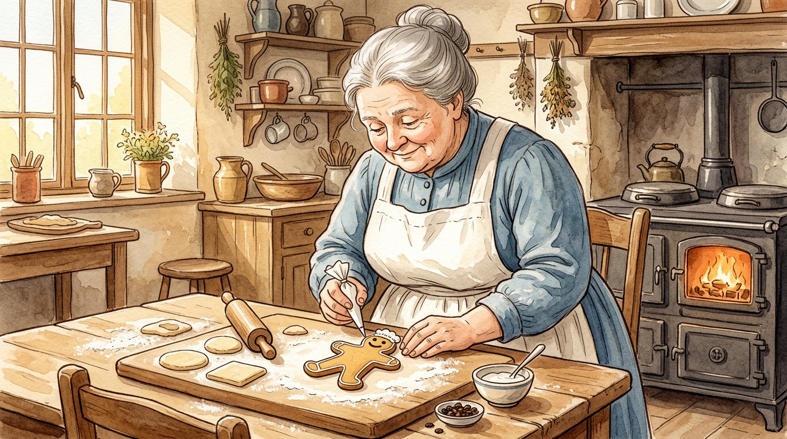
🔍 Zoom
A sugary hat, a big raisin mouth, and bright caraway-seed eyes — a very jolly little man!
Scene 3 • Out of the Oven!
Then she went up to sweep the parlor, and she swept and she swept till the clock struck twelve, when she dropped her broom in a hurry, and exclaiming, “Lawks! The gingerbread will be all baked to a cinder,” she ran down into the kitchen, and threw open the oven door.
And the square cakes were all done, nice and hard and brown, and the round cakes were all done, nice and hard and brown, and the gingerbread man was all done too, nice and hard and brown; and he was standing up in his corner, with his little caraway-seed eyes sparkling, and his raisin mouth bubbling over with mischief, while he waited for the oven door to be opened.
The instant the door was opened, with a hop, skip, and a jump, he went right over the square cakes and the round cakes, and over the cook’s arm, and before she could say “Jack Robinson” he was running across the kitchen floor, as fast as his little legs would carry him, towards the back door, which was standing wide open, and through which he could see the garden path.
🍪 The Gingerbread Man Chants!
“RUN, RUN, FAST AS YOU CAN! YOU CAN’T CATCH ME, I’M THE GINGERBREAD MAN!”
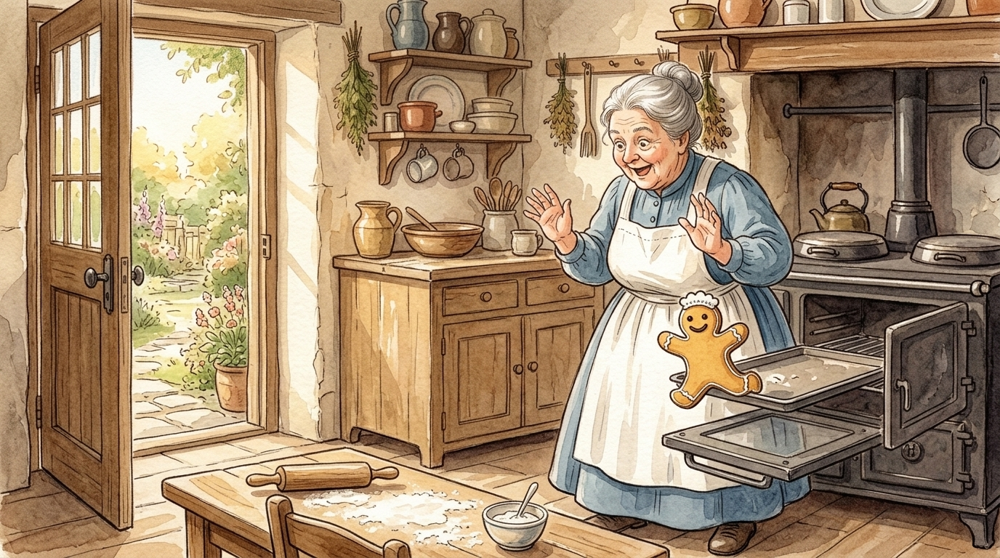
🔍 Zoom
With a hop, skip, and a jump, he leaped over the cakes and dashed for the open back door!
Scene 4 • Mouser the Cat Gives Chase
The old cook turned round as fast as she could, which wasn’t very fast, for she was rather a heavy woman and she had been quite taken by surprise, and she saw lying right across the doorway, fast asleep in the sun, old Mouser, the cat.
👩🍳 The Cook Cries Out
“Mouser, Mouser! Stop the gingerbread man! I want him for little Bobby.”
When the cook first called, Mouser thought it was only someone calling in her dreams, and simply rolled over lazily; and the cook called again, “Mouser, Mouser!” The old cat sprang up with a jump, but just as she turned round to ask the cook what all the noise was about, the little gingerbread man cleverly jumped under her tail, and in an instant was trotting down the garden walk.
Mouser turned in a hurry and ran after, although she was still rather too sleepy to know what it was she was trying to catch, and after the cat came the cook, lumbering along rather heavily, but also making pretty good speed.
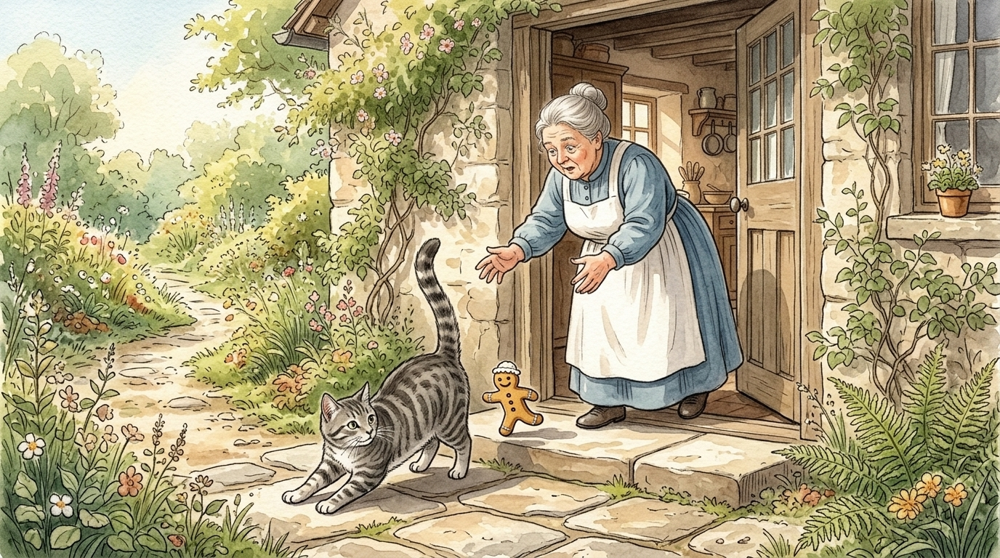
🔍 Zoom
The clever gingerbread man jumped right under Mouser's tail and trotted down the walk!
Scene 5 • Towser the Dog Wakes Up
Now at the bottom of the walk, lying fast asleep in the sun against the warm stones of the garden wall, was Towser, the dog.
👩🍳 The Cook Calls Again
“Towser, Towser, stop the gingerbread man! I want him for little Bobby.”
And when Towser first heard her calling he thought it was someone speaking in his dreams, and he only turned over on his side, with another snore, and then the cook called again, “Towser, Towser, stop him, stop him!”
Then the dog woke up in good earnest, and jumped up on his feet to see what it was that he should stop. But just as the dog jumped up, the little gingerbread man, who had been watching for the chance, quietly slipped between his legs, and climbed up on the top of the stone wall, so that Towser saw nothing but the cat running towards him down the walk, and behind the cat the cook, now quite out of breath.
🍪 The Gingerbread Man Chants!
“RUN, RUN, FAST AS YOU CAN! YOU CAN’T CATCH ME, I’M THE GINGERBREAD MAN!”
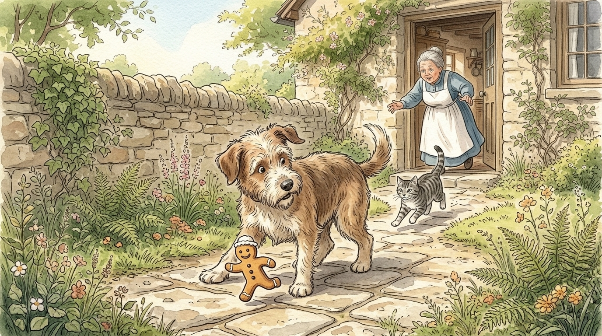
🔍 Zoom
He slipped quietly right between Towser's legs and scrambled up to the top of the stone wall!
Scene 6 • The Grand Scrimmage!
He thought at once that the cat must have stolen something, and that it was the cat the cook wanted him to stop. Now, if there was anything that Towser liked, it was going after the cat, and he jumped up the walk so fiercely that the poor cat did not have time to stop herself or to get out of his way, and they came together with a great fizzing, and barking, and meowing, and howling, and scratching, and biting, as if a couple of Catherine-wheels had gone off in the wrong way and had got mixed up with one another.
But the old cook had been running so hard that she was not able to stop herself any better than the cat had done, and she fell right on top of the mixed up dog and cat, so that all three rolled over on the walk in a heap together.
And the cat scratched whichever came nearest, whether it was a piece of the dog or of the cook, and the dog bit at whatever came nearest, whether it was a piece of the cat or of the cook, so that the poor cook was badly pummelled on both sides.
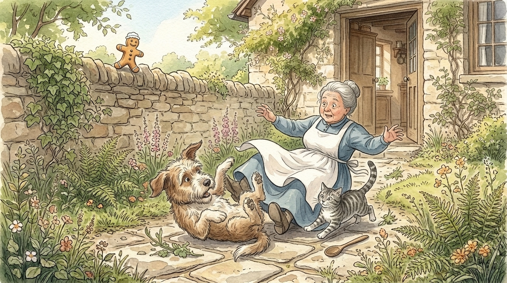
🔍 Zoom
All three rolled over in a great flurry of paws, aprons, barking, meowing, and scratching!
Scene 7 • Laughing on the Garden Wall
Meanwhile, the gingerbread man had climbed up on the garden wall, and stood on the top with his hands in his pockets, looking at the scrimmage, and laughing till the tears ran down from his little caraway-seed eyes and his raisin mouth was bubbling all over with fun.
🍪 The Gingerbread Man Chants!
“RUN, RUN, FAST AS YOU CAN! YOU CAN’T CATCH ME, I’M THE GINGERBREAD MAN!”
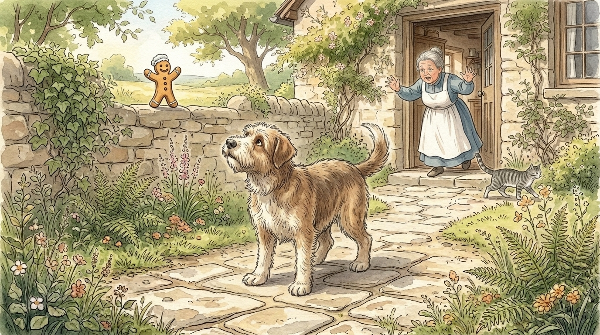
🔍 Zoom
He stood on the wall with his hands in his pockets, laughing till tears ran from his caraway eyes!
Scene 8 • Racing Across the Field
After a little while, the cat managed to pull herself out from under the cook and the dog, and a very cast-down and crumpled-up-looking cat she was. She had had enough of hunting gingerbread men, and she crept back to the kitchen to repair damages.
The dog, who was very cross because his face had been badly scratched, let go of the cook, and at last, catching sight of the gingerbread man, made a bolt for the garden wall. The cook picked herself up, and although her face was also badly scratched and her dress was torn, she was determined to see the end of the chase, and she followed after the dog, though this time more slowly.
When the gingerbread man saw the dog coming, he jumped down on the farther side of the wall, and began running across the field. Now in the middle of the field was a tree, and at the foot of the tree was lying Jocko, the monkey. He wasn’t asleep—monkeys never are—and when he saw the little man running across the field and heard the cook calling, “Jocko, Jocko, stop the gingerbread man,” he at once gave one big jump.
But he jumped so fast and so far that he went right over the gingerbread man, and as luck would have it, he came down on the back of Towser, the dog, who had just scrambled over the wall, and whom he had not before noticed. Towser was naturally taken by surprise, but he turned his head around and promptly bit off the end of the monkey’s tail, and Jocko quickly jumped off again, chattering his indignation.
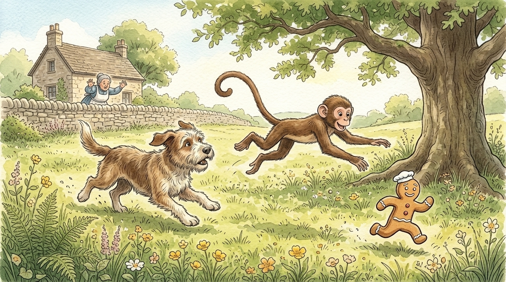
🔍 Zoom
He jumped down and dashed across the field toward the big tree in the middle of the meadow!
Scene 9 • Climbing to the Topmost Branch
Meanwhile, the gingerbread man had got to the bottom of the tree, and was saying to himself: “Now, I know the dog can’t climb a tree, and I don’t believe the old cook can climb a tree; and as for the monkey I’m not sure, for I’ve never seen a monkey before, but I am going up.”
So he pulled himself up hand over hand until he had got to the topmost branch.
🍪 The Gingerbread Man Chants from the Treetop!
“CLIMB, CLIMB, FAST AS YOU CAN! YOU CAN’T CATCH ME, I’M THE GINGERBREAD MAN!”
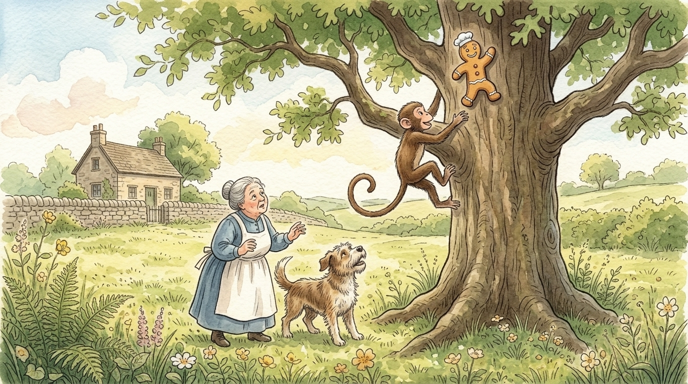
🔍 Zoom
Hand over hand he climbed, straight to the highest branch of the great tree!
Scene 10 • Caught by Jocko the Monkey
But the monkey had jumped with one spring onto the lowest branch, and in an instant he also was at the top of the tree.
The gingerbread man crawled out to the furthermost end of the branch, and hung by one hand, but the monkey swung himself under the branch, and stretching out his long arm, he pulled the gingerbread man in. Then he held him up and looked at him so hungrily that the little raisin mouth began to pucker down at the corners, and the caraway-seed eyes filled with tears.
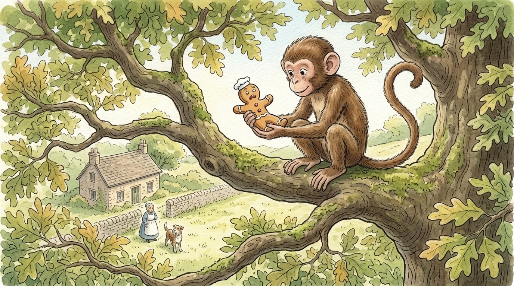
🔍 Zoom
Jocko swung out, reached with his long arm, and caught the little gingerbread man by the branch!
Scene 11 • Little Bobby to the Rescue
And then what do you think happened? Why, little Bobby himself came running up. He had been taking his noon-day nap upstairs, and in his dreams it seemed as if he kept hearing people call “Little Bobby, little Bobby!” until finally he jumped up with a start, and was so sure that someone was calling him that he ran downstairs, without even waiting to put on his shoes.
As he came down, he could see through the window in the field beyond the garden the cook, and the dog, and the monkey, and could even hear the barking of Towser and the chattering of Jocko. He scampered down the walk, with his little bare feet pattering against the warm gravel, climbed over the wall, and in a few seconds arrived under the tree, just as Jocko was holding up the poor little gingerbread man.
👦 Little Bobby Commands
“Drop it, Jocko!”
And drop it Jocko did, for he always had to mind Bobby. He dropped it so straight that the gingerbread man fell right into Bobby’s uplifted pinafore.
Then Bobby held him up and looked at him, and the little raisin mouth puckered down lower than ever, and the tears ran right out of the caraway-seed eyes.
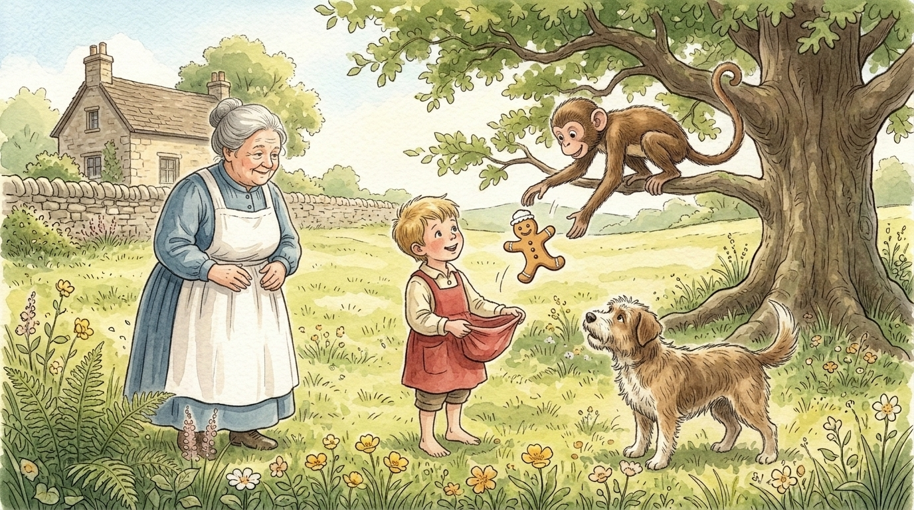
🔍 Zoom
“Drop it, Jocko!” cried Bobby — and down fell the gingerbread man right into Bobby's pinafore!
Scene 12 • Three Bites and All Gone!
But Bobby was too hungry to mind gingerbread tears, and he gave one big bite, and swallowed down both legs and a piece of the body.
🍪 The First Bite
“OH!” said the gingerbread man, “I’M ONE-THIRD GONE!”
Bobby gave a second bite, and swallowed the rest of the body and the arms.
🍪 The Second Bite
“OH!” said the gingerbread man, “I’M TWO-THIRDS GONE!”
Bobby gave a third bite, and gulped down the head.
🍪 The Final Bite
“OH!” said the gingerbread man, “I’M ALL GONE!”
And so he was—and that is the end of the story.
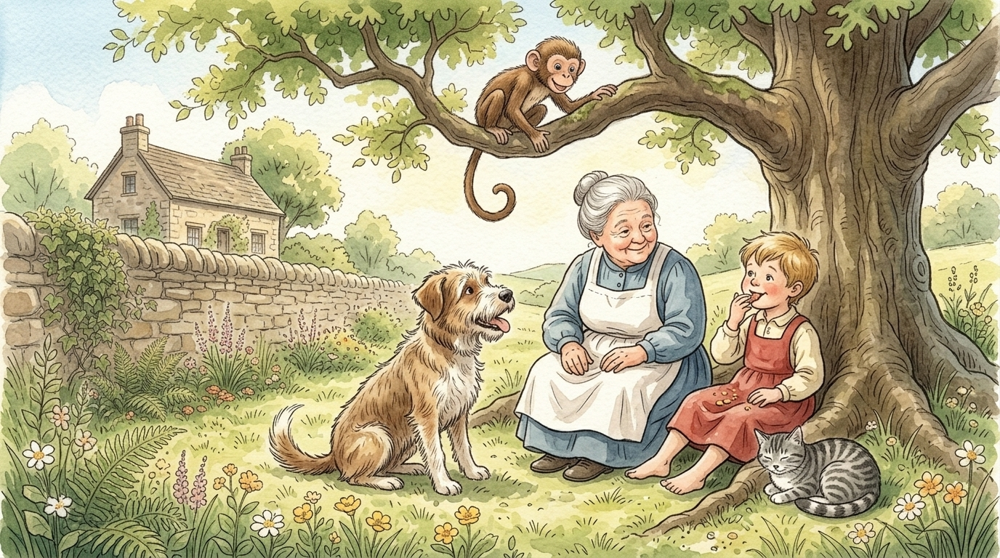
🔍 Zoom
“I’m all gone!” — and so he was, right to the very last delicious sugary crumb.💡 Bedtime Discussion for Shane
“Why did the Gingerbread Man keep running away?”
The Gingerbread Man thought nobody could ever catch him! Being fast is fun, but overconfidence can lead to big surprises.
Follow the full narration with all 12 story illustrations. Play, pause, or jump to your favorite part, and turn on English captions with the video controls.